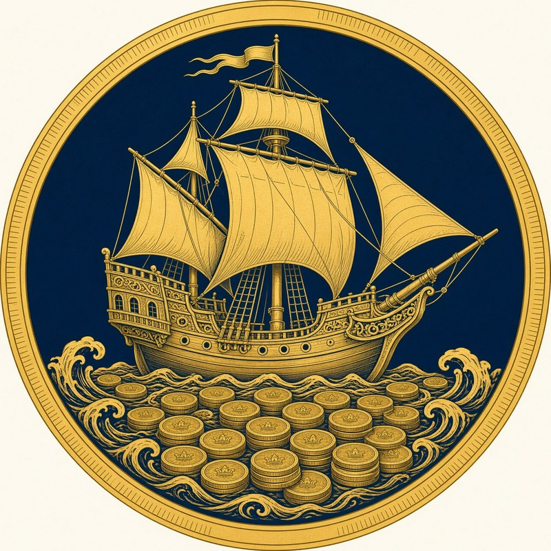

House Solvane
The Merchant Princes
The Solvanes are the “Coin-Lords” of Ironport. The elderly patriarch rarely leaves the Pavilion; his daughter, Verrick Solvane III, acts for the house.
- Head of house
- Grand-Patriarch Verrick Solvane II
- Interests
- Shipping Lanes, Import/Export, Harbor Control
- Device
- A golden galleon sailing on a sea of coins
- In the succession
- Backs Princess Raenessa Leclair